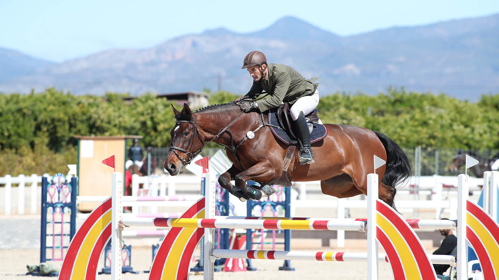
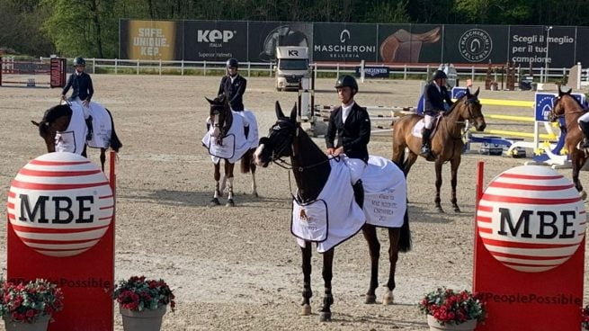

Salto
-

La RFHE suspende definitivamente el CSN5* de Madrid aplazado por rinoneumonitis
La Real Federación Hípica Española y la organización del concurso han acordado cancelar la prueba de la Liga Nacional de Saltos que estaba pendiente desde abril, cuando se detectaron varios casos de la enfermedad respiratoria.
-

Juan Riva Gil sube al podio en el CSIO Young Riders de Zuidwolde
El jinete español Juan Riva Gil firmó un destacado tercer puesto en una de las primeras pruebas del CSIO-YJCh de Zuidwolde, que se disputa en Países Bajos hasta el domingo.
-

Álvaro González de Zárate copa el podio en el Gran Premio Solumak del CSN3* de Heras
El jinete vitoriano firmó un doblete en la prueba principal del concurso cántabro al imponerse con Isadora de Ste Hermelle y terminar segundo con Pop Up, ambos caballos de ocho años con recorridos impecables en el desempate.
-

España suma 14 Copas de Naciones de Lisboa con cuatro triunfos desde el año 2000
El equipo español conquistó por decimocuarta vez en su historia la Copa de Naciones del CSIO3* de Lisboa, disputada en el hipódromo de Campo Grande. Desde la temporada 2000, los jinetes españoles han subido cuatro veces al primer cajón en la capital portuguesa.
-

CSIO5* de Roma: Alberto Marquez Galobardes y Armando Trapote defienden a España
Roma (Italia) celebra un CSIO5* del 27 de mayo al 31 de mayo. Repasamos quién está inscrito y la representación española, según la lista oficial de la FEI.
-

Ángel Cerdido Gastesi copa el podio del Gran Premio de Valdemoro con dos ceros
El jinete militar dominó el Gran Premio Ayuntamiento de Valdemoro-Memorial Almansa del CSN3* al firmar un doblete con 'Badminton de Tus' y 'Rona de Sil', ambos con recorrido impecable en el desempate.
-

United Touch S conquista el Rolex Grand Prix de Aachen con su hijo en la misma pista
El semental United Touch S se impuso en el Gran Premio del CHIO de Aachen en una jornada histórica: compartió recorrido con su hijo Untouched LB, marcando un hito sin precedentes en la catedral del salto ecuestre mundial.
-

Carlos Bosch arrasa en el CSN3* de Antequera con un doblete sobre Instant Love M Kar
El jinete catalán se impuso en las dos pruebas principales del Gran Premio del CSN3* Ciudad de Antequera, consolidando su dominio sobre los 1,40 metros en el Centro Hípico malagueño.
-

Richard Vogel gana el Rolex Grand Prix del TSCHIO Aachen con United Touch S
El jinete alemán Richard Vogel se ha proclamado vencedor del Rolex Grand Prix del TSCHIO Aachen 2026, prueba estelar del concurso CSI5* que se disputa este fin de semana en el Allianz-Park de Aachen y que forma parte del Rolex Grand Slam of Show Jumping. Vogel firmó el cronómetro más rápido del…
-

La Liga Nacional de Saltos regresa este mes con el CSN5* de Valladolid
La competición pucelana acogerá del 29 al 31 de mayo el segundo concurso puntuable de la temporada, tras el aplazamiento de la cita madrileña por el brote de rinoneumonitis en el Real Club de Campo Villa de Madrid.
-

Sergio Álvarez Moya conquista el Gran Premio del CSI2* Peelbergen con Be Blue
El jinete asturiano firmó un pleno de victorias en el concurso neerlandés al imponerse en las dos pruebas disputadas con la yegua Brantzau, demostrando además una regularidad excepcional sin derribos en las siete rondas que completó.
-

Aachen abre la temporada con un TSCHIO excepcional en mayo y un Rolex Grand Prix el domingo
La organización del CHIO Aachen ha programado entre el viernes 22 y el domingo 24 de mayo un TSCHIO con formato propio centrado en el salto. La edición es excepcional dentro del calendario habitual del recinto, que reservaba sus grandes citas para julio: el desplazamiento al inicio del verano se debe a que el CHIO…
-
Hípica al Día
España gana la Copa de Naciones CSIO3* de Lisboa tras desempate con Sudáfrica
El equipo español se impuso en la Copa de Naciones del CSIO3* de Lisboa tras igualar con Sudáfrica en las dos rondas y desempatar por tiempo acumulado: 39,52 segundos frente a 43,10. Francia completó el podio con 8 puntos totales.
-

La FEI endurece los requisitos de acceso al Mundial de Caballos Jóvenes
A partir de 2026, los ejemplares de 5, 6 y 7 años deberán acreditar tres recorridos sin penalización en alturas mínimas crecientes para competir en el campeonato organizado junto a la WBFSH.